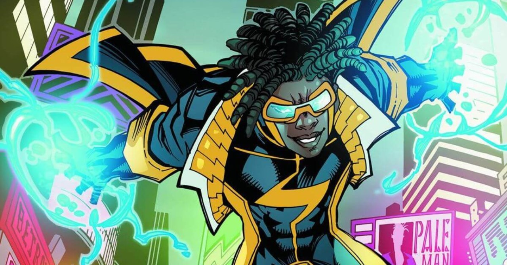
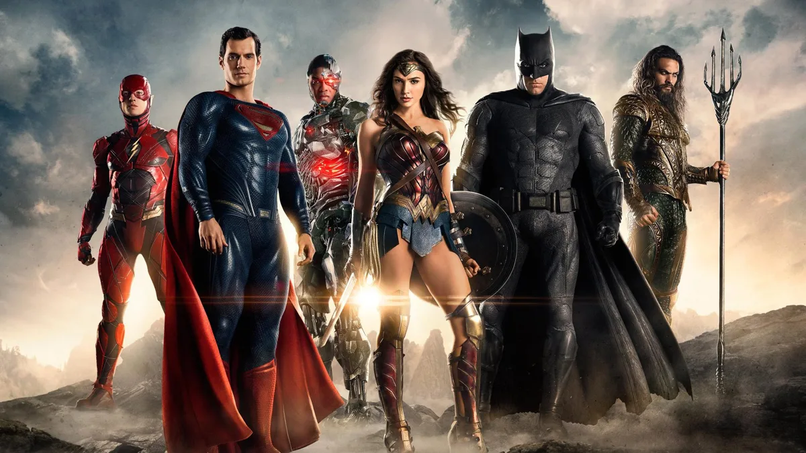
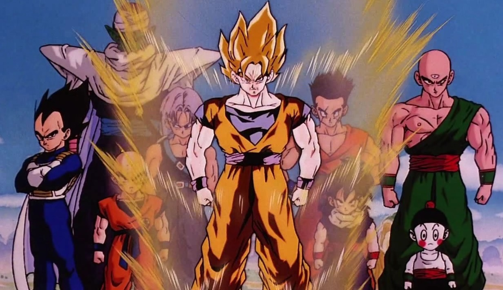

Super Choque
Uma faísca de emoção percorre os corações dos fãs de super-heróis enquanto a tão aguardada adaptação televisiva de "Super Choque" estreia, trazendo à vida um dos personagens mais icônicos e queridos dos quadrinhos. A série, baseada no popular herói criado...
Leia mais...

Violet Evergarden
A aclamada série de anime japonesa "Violet Evergarden" continua a cativar audiências ao redor do mundo com sua narrativa emocionalmente poderosa e animação de alta qualidade. Criada por Kana Akatsuki e ilustrada por Akiko...
Leia mais...

Liga da Justiça
Uma nova era de super-heroísmo está prestes a nascer com a estreia da aguardada produção cinematográfica "Liga da Justiça". Os fãs de quadrinhos e cinema estão se preparando para uma experiência emocionante e épica, enquanto os...
Leia mais...

Dragon Ball Z
Os fãs de uma das séries de anime e mangá mais icônicas do mundo estão se preparando para uma nova e emocionante aventura, já que "Dragon Ball Z" retorna em uma adaptação cinematográfica...
Leia mais...

Ben 10
O icônico herói Ben 10 está de volta e mais forte do que nunca, conquistando uma nova geração de fãs e reafirmando seu lugar como um dos personagens mais amados da cultura pop. A série de animação "Ben 10" fez sua estreia nas telas em 2005, e...
Leia mais...

Estrelas além do tempo
O aclamado filme "Estrelas Além do Tempo" continua a impactar o público e a gerar conversas importantes sobre a igualdade de gênero e o empoderamento feminino, especialmente no campo da ciência e tecnologia. Inspirado na história...
Leia mais...

Jujutsu Kaisen
Uma onda de entusiasmo e admiração está varrendo o mundo do entretenimento, e seu epicentro é o anime "Jujutsu Kaisen". Com uma trama envolvente, personagens cativantes e sequências de batalha empolgantes, essa série japonesa conquistou...
Leia mais...
Matrix
Após anos de expectativa e especulação, os fãs de ficção científica e amantes do cinema podem comemorar: "Matrix Resurrections" finalmente chega aos cinemas, prometendo uma experiência cinematográfica revolucionária e repleta de ação. A...
Leia mais...

Pantera Negra
O filme "Pantera Negra" continua a ser um marco cultural e cinematográfico, transcendendo as telas para se tornar um símbolo de empoderamento, representação e impacto social. Desde o seu lançamento, em 2018, a produção...
Leia mais...

Steins Gate
A icônica série de animação japonesa "Steins;Gate" continua a cativar e conquistar corações em todo o mundo, com sua trama envolvente e abordagem criativa à viagem no tempo. A produção, que combina elementos de ficção...
Leia mais...